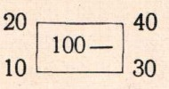
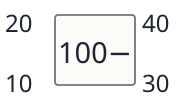
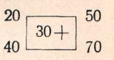
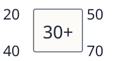
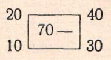
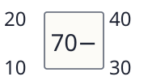

№784 в центре:100−, операнды20,40,10,30. p132_scheme_100_minus


Исходные вырезки слева, новые рисунки справа. Числа и группировки сверяются с заданиями.
p132_scheme_100_minus

p132_scheme_30_plus

p132_scheme_70_minus
